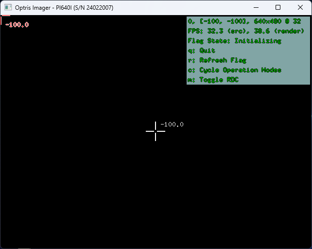
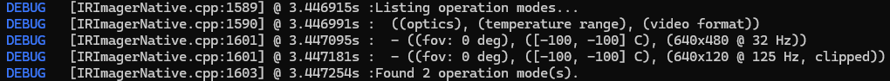

|
Thermal Camera SDK 11.4.9
SDK for Optris Thermal Cameras
|
|
Thermal Camera SDK 11.4.9
SDK for Optris Thermal Cameras
|
While connecting to a device the SDK tries to locate its calibration. As explained in the corresponding section in the important files chapter the calibration is comprised of a set of different files. They tell the SDK, amongst other things,
If the SDK fails to find the full set of calibration files in one of their usual storage locations, it will probe up to three different sources from which it could acquire them. Clients can configure which sources should be tried and in what order through the static Sdk class.
If none of these sources yielded the full set, the SDK nonetheless concludes the connection process. In this case an IRImagerClient will be able to receive frame data via the onFrame() and onRawFrame()callbacks:
RawFrameEvent holds valid data but many data points in the metadata may be faulty. This especially applies to the internal probe temperatures for box, flag and chip and the read PIF input values.FrameEvent only holds invalid temperatures because the SDK can not convert the raw frame data into valid temperatures without the calibration. The metadata has the same restrictions as in onRawFrame().
Additionally, the deduction of available operations modes is affected. The resulting operation modes are only derived from the supported video formats and feature invalid values for the field of view (0) and the temperature range limits (-100).

The behavior of the calibration file acquisition can be adjusted statically through the Sdk class for all IRImager instances of the current process or dynamically for a specific IRImager instance during the connection process via the IRImagerClient::onConnection() callback.
The SDK is able to probe the following three different sources in search of a full set of calibration files. This happens automatically during the connection process.
Supported by Xi 80, Xi 320 MT and Xi 410
The devices listed above have their calibrations stored in their on-device memory. The SDK is able to download them to the user data directory for use by all local SDK clients.
This source is automatically skipped for devices that do not support it.
The SDK is capable of recursively searching a directory on the filesystem for missing calibration files. To make this happen, clients first need to specify the path to be searched via the Sdk class. By default this path is empty and the SDK will skip this source because of it.
The SDK copies found calibration files to the user data directory for the subsequent use by all local SDK clients.
Lastly, the SDK can download the calibration files from Optris servers.
The SDK downloads the files over HTTPS from an ordered list of servers: https://calibration.optris.com first, then the built-in mirror https://calibration.optris-ir.cn (for regions from which the primary server is not reachable), then any fallback servers registered via Sdk::addCalibrationFallbackServer(). At the start of an acquisition all servers are health-checked in parallel and the highest-priority reachable one is used; individual downloads fail over to the next server on errors (see Runtime Behavior).
CaliAccessInternet covers all configured servers, including the built-in mirror and any registered fallback servers.Finally, the SDK can ask the client for a source directory at runtime. When this source is reached the SDK publishes the CaliCopySourceDirectory state via onConnection(); the client answers by setting the sourceDirectory field of the ConnectionEvent (for example after letting the user pick a folder). The SDK then searches that directory just like the Filesystem source. If the client provides an empty string (default), this source is skipped.
This source decouples the interactive prompt from the Filesystem source so it can be ordered independently - typically last, as a manual fallback after the automatic sources have been exhausted.
The static Sdk class exposes several methods that can be used to configure the behavior of the automatic calibrations file acquisition for all IRImager instances of that process.
With the Sdk::setCalibrationFileSources() method you can specify which source should be probed in what order. The sources are represented by the enum CalibrationFileSource. If you call this method in C++ like this
the SDK will try the sources from top to bottom in search of missing calibration files:
Empty - This enum value indicates that the slot with the highest priority is empty. The SDK ignores it and moves to the second source. Empty will result in a SDKException.Device - The SDK tries to download the calibration files from the on-device memory. If this fails or if this is not supported by the device, the SDK will move on to the last source.Filesystem - The SDK searches the set calibration file source directory for the missing files. If this fails or if a calibration file source directory is not set, the overall acquisition will fail and the SDK will connect to the device without a calibration with the limitations described in the overview section.The fixed three-parameter overload is convenient but limited to three slots. To order more sources - in particular to place the User prompt independently - use the list overload, which accepts any number of sources in any order:
CalibrationFileSource::Empty entries are ignored.
DeviceFilesystemInternetUserVia the Sdk::setCalibrationFileSourceDirectory() you can specify the directory in which the Filesystem source searches for missing calibration files.
In C++ you can set the directory as follows:
When specifying the directory path the following symbols/variables are supported:
~, %USERPROFILE% refer to ~/ on Linux and <User Home>/ on Windows.%APPDATA% refers to ~/.config/ on Linux and <User AppData>/Roaming/ on Windows.Relative paths are not supported. You can either use / as system independent directory separator or utilize system dependent ones like / for Linux and \ on Windows.
If the specified path does not exist or if it is not a directory a SDKException is thrown.
A set calibration file source directory can be cleared via the Sdk::clearCalibrationFileDirectory() method.
The Internet source always starts with the built-in servers https://calibration.optris.com/api and the mirror https://calibration.optris-ir.cn/api. Additional fallback servers - for example a company-internal mirror - can be appended via Sdk::addCalibrationFallbackServer():
The URL must use https:// and include the full API base path; the SDK appends /healthz and /v1/calibration/... to it. A registered server must mirror the REST layout of the built-in servers, including the Digest: sha-256=... response header used for integrity verification. Registered servers are tried after the built-ins, in registration order. Invalid URLs cause a SDKException; duplicates are ignored with a warning.
All registered fallback servers are removed again via Sdk::clearCalibrationFallbackServers(). The built-in servers always remain active.
When initiating a connection through one of the IRImager::connect() methods, the SDK will update registered IRImagerClients about the connection processes via the callback onConnection(). The state field in the provided ConnectionEvent indicates the current stage of this process.
Right after calling connect() the state Connecting is sent to the clients. At this stage the SDK gathers all necessary information to establish the device connection. This includes locating the required calibration files. If they are present, the SDK will proceed and ultimately send the state Connected on success or Failed on failure.
If it needs to acquire missing calibration files, it will probe the sources in the configured sequence. Depending on the currently tried source the SDK publishes different ConnectionStates:
The state CaliDeviceDownload is sent to indicate that the SDK is trying to download the calibration files from the device. If successful, the state will transition to CaliAcquired. Otherwise, the state will either move to CaliMissing, if it is the last source to be probed or the SDK moves on to the next specified source.
The state CaliCopy is published before the SDK searches the configured calibration file source directory (see Calibration File Source Directory). On a successful acquisition the ConnectionState moves on to the CaliAcquired state. Otherwise, the state will either transition to CaliMissing, if it is the last source, or the SDK tries the next configured source.
Before accessing the Internet the SDK prompts the client for permission by sending a ConnectionEvent with the state CaliAccessInternet. The client can grant (default) or deny access by setting the boolean field accessInternet of the event object. The consent covers all configured servers, including the built-in mirror and any registered fallback servers. If denied, the SDK tries the next source or publishes CaliMissing, if it was the last configured source. If granted, the SDK sends CaliInternetDownload and begins the download process.
The download starts with a short parallel health check of all configured servers (see Calibration Fallback Servers); the highest-priority reachable server is used first, so an unreachable primary server does not cost a network timeout per file. The health check is advisory - if no server responds, the SDK still tries them all in priority order. Each file download fails over to the next server when a server is unreachable, keeps failing (5xx), or delivers corrupt data; a server that does not have a particular file (404) is retried for the next file, while other servers get a chance at the missing one. The selected server and every failover are logged.
On success the state moves to CaliAcquired. On failure the SDK either tries the next source or publishes CaliMissing, if no more sources are available.
The SDK publishes the CaliCopySourceDirectory state to ask the client for a source directory. The client provides one by setting the sourceDirectory field of the ConnectionEvent (for example, after showing a file picker). If an empty string (default) is provided, this source is skipped. The SDK then searches the provided directory; on success the state moves to CaliAcquired. Otherwise, the state will either transition to CaliMissing, if it is the last source, or the SDK tries the next configured source.